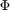
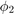
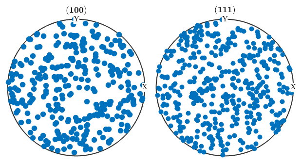

Crystal Orientations
Explains how to define crystal orientations, how to switch between different convention and how to compute crystallographic equivalent orientations.
Open in Editor
Contents
In texture analysis crystal orientations are used to describe the alignment of the crystals within the specimen. A crystal orientation is defined as the rotation that maps the specimen coordinate system onto the crystal coordinate system.
The class orientation is inherited from the class rotation and allow to work with orientation in MTEX.
Defining a crystal orientation
In order to define a crystal orientation one has to define crystal and specimen symmetry first.
cs = crystalSymmetry('cubic'); ss = specimenSymmetry('orthorhombic');
Now a crystal orientation is defined in the same way as a rotation. A well known possibility is so called Euler angles. Here two conventions are commonly used:
SUB: Bunge Euler angle convention
Here an arbitrary rotation is determined by three consecutive rotations in the sample reference frame. The first is about the z-axis, the second about the x-axis, and the third again about the z-axis. Hence, one needs three angles to define an orientation by Euler angles. In the literature these angles are known as "triplet of Euler angles" or simply "Euler angles" and you can find many definitions for them according to different authors.
o = orientation.byEuler(30*degree,50*degree,10*degree,cs,ss)
o = orientation
size: 1 x 1
crystal symmetry : m-3m
specimen symmetry: mmm
Bunge Euler angles in degree
phi1 Phi phi2 Inv.
30 50 10 0
SUB: Matthies Euler angle convention
In contrast to the Bunge convention here the three rotations are taken about the z-axis, the y-axis, and the z-axis.
o = orientation.byEuler(30*degree,50*degree,10*degree,'ZYZ',cs,ss)
o = orientation size: 1 x 1 crystal symmetry : m-3m specimen symmetry: mmm Bunge Euler angles in degree phi1 Phi phi2 Inv. 120 50 280 0
SUB: Axis angle parametrisation
Another possibility to specify an rotation is to give its rotational axis and its rotational angle.
o = orientation.byAxisAngle(xvector,30*degree,cs,ss)
o = orientation
size: 1 x 1
crystal symmetry : m-3m
specimen symmetry: mmm
Bunge Euler angles in degree
phi1 Phi phi2 Inv.
0 30 0 0
SUB: Miller indice
There is also a Miller indice convention for defining crystal orientations.
o = orientation.byMiller([1 0 0],[0 1 1],cs,ss)
o = orientation size: 1 x 1 crystal symmetry : m-3m specimen symmetry: mmm Bunge Euler angles in degree phi1 Phi phi2 Inv. 135 90 90 0
SUB: Four vectors defining a rotation
Given four vectors u1, v1, u2, v2 there is a unique rotations q such that q u1 = v1 and q u2 = v2.
o = orientation.map(xvector,yvector,zvector,zvector,cs,ss)
o = orientation
size: 1 x 1
crystal symmetry : m-3m
specimen symmetry: mmm
Bunge Euler angles in degree
phi1 Phi phi2 Inv.
90 0 0 0
SUB: Defining an orientation by a 3 times 3 matrix
o = orientation.byMatrix(eye(3),cs,ss)
o = orientation
size: 1 x 1
crystal symmetry : m-3m
specimen symmetry: mmm
Bunge Euler angles in degree
phi1 Phi phi2 Inv.
0 0 0 0
SUB: Predefined orientations
Below you find a list of orientations predefined in MTEX:
% the cube or identical orientation orientation.id(cs,ss); orientation.cube(cs,ss); % brass orientations orientation.brass(cs,ss); orientation.brass2(cs,ss); % copper orientations orientation.copper(cs,ss); orientation.copper2(cs,ss); % other cube orientations orientation.cubeND22(cs,ss); orientation.cubeND45(cs,ss); orientation.cubeRD(cs,ss); orientation.goss(cs,ss); orientation.invGoss(cs,ss); orientation.PLage(cs,ss); orientation.PLage2(cs,ss); orientation.QLage(cs,ss); orientation.QLage2(cs,ss); orientation.QLage3(cs,ss); orientation.QLage4(cs,ss); orientation.SR(cs,ss); orientation.SR2(cs,ss); orientation.SR3(cs,ss); orientation.SR4(cs,ss);
Note that you may define a list of orientations by using the same syntax as for the matlab commands ones, zeros, ..
orientation.id(100,1,cs,ss)
ans = orientation size: 100 x 1 crystal symmetry : m-3m specimen symmetry: mmm
SUB: Random orientations
You may generate random orientations with
ori = orientation.rand(1000,cs,ss)
ori = orientation size: 1000 x 1 crystal symmetry : m-3m specimen symmetry: mmm
Coordinate transformations
Orientations are essentially coordinate transformations that transform a direction (tensor, slip system ...) given by crystal coordinates into the same object given in specimen coordinates.
As an example consider the crystal direction
h = Miller(1,0,0,cs)
h = Miller size: 1 x 1 symmetry: m-3m h 1 k 0 l 0
and the orientation
o = orientation.byEuler(90*degree,90*degree,0*degree,cs,ss)
o = orientation
size: 1 x 1
crystal symmetry : m-3m
specimen symmetry: mmm
Bunge Euler angles in degree
phi1 Phi phi2 Inv.
90 90 0 0
Then in specimen coordinates the direction h has the coordinates
r = o * h
r = vector3d size: 1 x 1 x y z 0 1 0
Conversely, we can go back from specimen coordinates to crystal coordinates by multiplying with the inverse orientation
inv(o) * r
ans = Miller size: 1 x 1 symmetry: m-3m h 1 k 0 l 0
Assume next that the specimen is rotated about the X-axis about 60 degree. We may define this rotation by
rot = rotation.byEuler(0,60*degree,0);
Then a given orientation
o = orientation.byEuler(90*degree,0,0,cs);
translates into a orientation with respect to the rotated specimen coordinate system by multiplying it with the rotation
o1 = rot * o
o1 = orientation
size: 1 x 1
crystal symmetry : m-3m
specimen symmetry: 1
Bunge Euler angles in degree
phi1 Phi phi2 Inv.
0 60 90 0
Symmetric equivalence
Crystal orientations always appear as a class of symmetrically equivalent orientations which are physicaly not distinguishable. For a given orientation o the complete list of all symmetrically equivalent orientations is given by the command symmetrise
symmetrise(o)
ans = orientation size: 48 x 1 crystal symmetry : m-3m specimen symmetry: 1
Alternatively the list can be computed by multiplying with the specimen and the crystal symmetry from the left and from the right.
ss * o * cs
Warning: Symmetry missmatch! ans = orientation size: 8 x 48 crystal symmetry : m-3m specimen symmetry: mmm
Conversion into Euler angles, matrix, quaternion or Rodrigues vector
There are methods to transform quaternion in almost any other parameterization of rotations as they are:
% as Euler angles o1.phi1, o1.Phi, o1.phi2 % as quaternion quaternion(o1) % as matrix o1.matrix % as Rodrigues vector o1.Rodrigues
ans =
2.2204e-16
ans =
1.0472
ans =
1.5708
ans = Quaternion
size: 1 x 1
a b c d
0.612372 0.353553 -0.353553 0.612372
ans =
-0.0000 -1.0000 0.0000
0.5000 -0.0000 -0.8660
0.8660 -0.0000 0.5000
ans = vector3d
size: 1 x 1
x y z
0.57735 -0.57735 1
Plotting Orientations
SUB: in Euler angle space
By default the function plot plots orientations in the three dimensional Bunge Euler angle space
ori = orientation.rand(100,cs); plot(ori)

Note that the orientations are automatically projected into the fundamental region. In the case of cubic symmetry this means that the Euler angles  and  are restricted to 90 degrees. If the orientations should be plotted at their specified Euler angles the option ignoreFundamentalRegion has to be used.
plot(ori,'ignoreFundamentalRegion')

SUB: in axis angle space
Alternatively, orientations can be plotted in the three dimensional axis angle space.
plot(ori,'AxisAngle','markerEdgeColor',[0 0 0.8],'markerSize',8)

Note again that the orientations are automatically projected into its fundamental region. Again, this can be switched off with the option ignoreFundamentalRegion.
plot(ori,'axisAngle','ignoreFundamentalRegion','markerEdgeColor',[0 0 0.8],'markerSize',8) % visualize the fundamental region hold on oR = fundamentalRegion(ori.CS,ori.SS) plot(oR,'color',[1 0.5 0.5]), hold off
oR = orientationRegion crystal symmetry: 432 max angle: 62.7994° face normales: 14 vertices: 24

SUB: in (inverse) pole figures
% a pole figure plot
plotPDF(ori,Miller({1,0,0},{1,1,1},ori.CS))

an inverse pole figure plot
plotIPDF(ori,[vector3d.X,vector3d.Z])

SUB: in sections of the orientations space
% as phi2 sections plotSection(ori,'phi2')